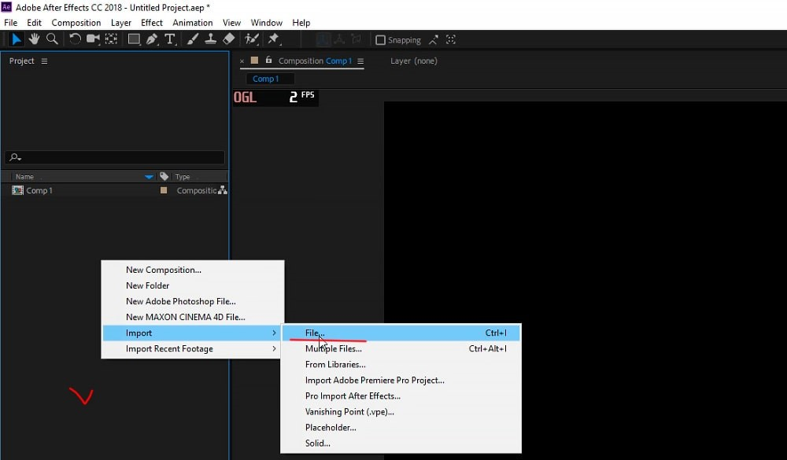
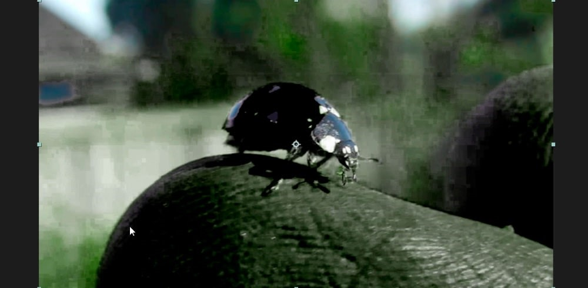
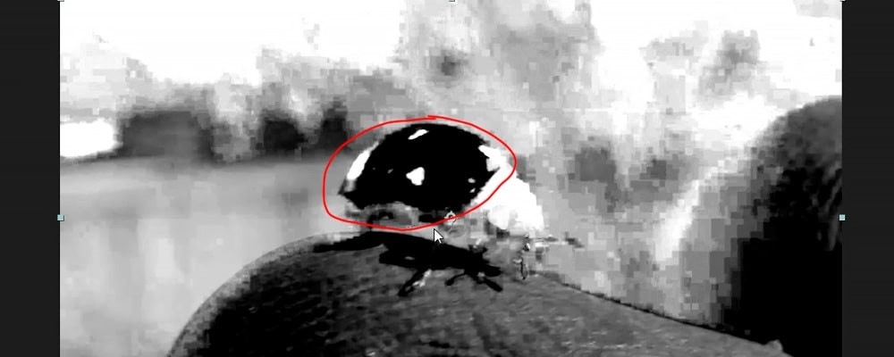

AELab
Выполнил Никита Трунов
Курсовая работа
Как изменить цвет объекта в After Effects
В данном уроке мы рассмотрим способ изменения цвета объектов в видео. Для данной задачи мы будем использовать стандартный эффект After Effects, который называется "KeyLight", что в переводе на русский звучит, как "Ключевой свет". С помощью данного эффекта можно не только менять цвета объектов в видео, но и просто корректировать их, делать ярче или наоборот бледнее. Для работы я взял вот такой видео-футаж с насекомым.
Создание проекта
Импорт футажа
И так, создаём новую композицию. Разрешение оставим FullHD, так как футаж у нас именно в таком формате. Частоту кадров оставим 25 кадров в секунду, длительность тоже оставим как и есть - одна минута. Цвет фона, в данном случае, значения не имеет, поэтому его тоже оставим, как есть - чёрным.

Теперь импортируем видео-футаж, кликаем правой кнопкой мыши по панели проекта и выбираем "Import" - "File", выбираем футаж и помещаем его в композицию, просто перетаскивая мышью.
Теперь импортируем видео-футаж, кликаем правой кнопкой мыши по панели проекта и выбираем "Import" - "File", выбираем футаж и помещаем его в композицию, просто перетаскивая мышью.
Наложение эффекта
KeyLight
Теперь наложим на видимый слой тот самый эффект "Keylight". Кликаем по слою правой кнопкой мыши и выбираем "Effect" - "keying" и "keylight". В результате у нас открываются параметры данного эффекта, с помощью которых мы выделим тот цвет, который будем заменять.
Для начала нужно указать скрипту тот самый цвет, который будем выделять. Для этого берем пипетку параметра "Screen colour" и указываем ею цвет объекта. Цвет лучше выбирать в самом тёмном месте объекта, в данном случае, где-то вот здесь.

В результате у нас выделился нужный нам цвет и с ним еще и пальцы захватились, потому что цвет кожи имел похожий оттенок. Но в этом нет ничего страшного, мы сейчас вытравим нужный нам оттенок.
В результате у нас выделился нужный нам цвет и с ним еще и пальцы захватились, потому что цвет кожи имел похожий оттенок. Но в этом нет ничего страшного, мы сейчас вытравим нужный нам оттенок.
Выставим отображение вместо "Финальный результат" на "combined matte", комбинированный матовый и получаем вот такой результат.

Выбранный нами цвет теперь ярко выделен чёрным, но нам нужен противоположный результат, заменяемый цвет нужно наоборот выделить белым.
Для этого открываем вот этот параметр "Screen Matte" и выкручиваем настройки "Clip Black" на 100, а "Clip White" на ноль. В результате мы сделали типа инверсию, поменяли местами цвета.
Выбранный нами цвет теперь ярко выделен чёрным, но нам нужен противоположный результат, заменяемый цвет нужно наоборот выделить белым.
Для этого открываем вот этот параметр "Screen Matte" и выкручиваем настройки "Clip Black" на 100, а "Clip White" на ноль. В результате мы сделали типа инверсию, поменяли местами цвета.
Подключение уровней
к эффекту KeyLight
Теперь мы еще сильнее выделим выбранный нами цвет, чтобы скрипт более точно заменил его на другой и не было каких-либо дефектов. Для этого подключим к параметрам эффекта уровни и с помощью них вытянем цвет по максимуму. Кликаем по панели параметров эффекта правой кнопкой мыши и выбираем "Color correction" - "Коррекция цвета" и "Levels" - "Уровни".
И настраиваем на глаз уровни, чтобы белый был как можно ярче виден, при этом нужно быть аккуратным, чтобы не захватить лишнего по краям объекта. Можно еще посмотреть разные кадры на видео, чтобы было понятно, как на них выделяется цвет на объекте. У меня получились вот такие настройки уровней. Чтобы смягчить края, можно еще воспользоваться параметром "Screen Softness", всё зависит от вашего объекта, ну в данном случае можно прям чуть чуть выкрутить этот параметр на 1,5. Как то так.
И настраиваем на глаз уровни, чтобы белый был как можно ярче виден, при этом нужно быть аккуратным, чтобы не захватить лишнего по краям объекта. Можно еще посмотреть разные кадры на видео, чтобы было понятно, как на них выделяется цвет на объекте. У меня получились вот такие настройки уровней. Чтобы смягчить края, можно еще воспользоваться параметром "Screen Softness", всё зависит от вашего объекта, ну в данном случае можно прям чуть чуть выкрутить этот параметр на 1,5. Как то так.
Наложение цвета
с помощью корректирующего слоя
Теперь создадим корректирующий слой, с помощью которого и будем менять цвет объекта. Кликаем правой кнопкой мыши по панели слоёв и выбираем "New" - "Adjustment Layer" и помещаем его под наш слой с выделенным цветом.
После этого, в настройках "Track Matte", у корректирующего слоя выставляем "Luma Matee" с нашим видео.
И в результате мы подключили слой с выделенным цветом к корректирующему слою. Теперь, если мы будем менять цвет корректирующего слоя, то будет изменяться выделенный нами цвет объекта. После того, как мы подключили слой с наложенным эффектом "KeyLight" к корректирующему слою он автоматически отключился.
Далее нам нужно включить видимость самого первого слоя и наложить на корректирующий слой цветовую коррекцию. Кликаем по корректирующему слою правой кнопкой мыши и выбираем "Effect" - "Color Correction" и "Hue/Saturation", т.е. "Оттенок/Насыщенность".
В появившемся окне параметров цвета включаем "Colorize", т.е. "Раскрашивание" и можем теперь менять цвет и оттенок объекта. Параметрами мы можем менять цветовой тон, насыщенность и свет. Давайте поменяем цвет объекта на какой-нибудь по-ярче. Ну допустим, сделаем цвет фуксии и поднастроим яркость.
Наложение маски на объект
И так, как мы видим, объект на видео теперь имеет заданный нами цвет, но другие окружающие объекты так же местами окрасились. Для того, чтобы это исправить мы воспользуемся маской слоя, с помощью которой выделим цвет только на самом объекте, а всё остальное скроем.
Выделяем верхний слой с наложенным эффектом "KeyLight", берём инструмент "Перо", устанавливаем ползунок на тайм-лайне на первый кадр и обводим часть объекта, на которой нужно показать цвет, в данном случае крылья насекомого.
На месте и на всех последующих кадрах, кроме самого первого она просто не попадает на объект. Нам нужно заставить перемещаться маску вместе с объектом и принимать определённую форму объекта, потому что насекомое при движении меняет позы.
Для этого воспользуемся параметром маски, который называется "Path", что в переводе с английского означает "Контур". Находим в слое с эффектом маску, открываем её параметры и находим параметр "Mask Path". Ставим ползунок на первый кадр, по которому мы и выставляли маску и ставим первый ключ на тайм-лайне. Далее мы немного перемещаем ползунок вперёд, берём инструмент "Перо", выделяем слой с эффектом и настраиваем маску по контуру крыльев на объекте. Кликаем по точкам и расставляем их.
Теперь, если мы прокрутим видео, то увидим, что маска движется за объектом и принимает его форму. Перемещаем ползунок еще дальше по шкале и снова настраиваем маску по объекту. И вот таким образом перемещаем ползунок и настраиваем маску до конца видео.
что чем быстрее объект в видео меняет свои позы и положение, тем больше работы предстоит сделать, еще хуже, если при этом объект какой-нибудь сложной формы а задний фон содержит много цветовых оттенков.